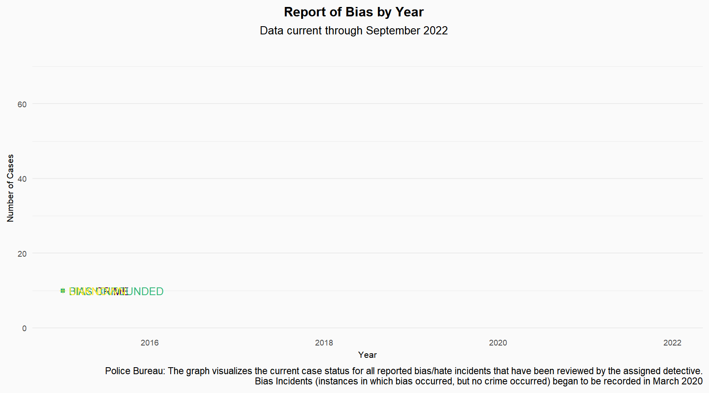

This data was obtained from the PortlandMaps- Open Data website- Reported Bias Crime Statistics, Portland Police Bureau.
A hate crime is a criminal offense committed against persons, property, or society that is motivated, in whole or in part, by an offender’s bias against an individual’s or a group’s race, religion, ethnic/national origin, gender, age, disability or sexual orientation. (Definition developed at the 1998 IACP Summit on Hate Crime in America.) This data exploration aims to learn about the most common locations where these crimes occurred and their types.
Insights:
The victims are from 2 to 83 years old, with a median of 32 (when the information was available)
The ages of the suspects are from 11 to over 80 years, with a median of 40 (when the information was available)
Most hate crimes were reported in 2021, with a decline in 2022, but bias incidents have increased over the past two years.
Over the past five years, the most common motivations for bias have been race, sexual orientation, and ethnicity.
The most common cases of bias reported have been against Black or African-American people, followed by Anti-Gay (Male) and Anti-White.
The places where these incidents occurred the most are Public Spaces (Streets/Roads/Sidewalks), residences, and Parking Lots.
Behind the Scenes
pp1 <- crime %>%filter(!(Bias.Category %in%"")) %>%filter(!(Bias.Type %in%"")) %>%filter(!(Location.Type %in%"")) %>%filter(!(Primary.Offense.Type %in%c("", "Hit & Run-Property"))) %>%filter(!(Suspect.Gender %in%"")) %>%filter(!(Suspect.Race %in%"")) %>%filter(!(Victim.Gender %in%"")) %>%filter(!(Victim.Race %in%"")) %>%filter(!(Victim.Suspect.Relationship %in%"")) %>%ggplot() +aes(x = Victim.Age, fill = Victim.Gender) +geom_histogram(bins = 30L) +scale_fill_viridis_d(option ="viridis") +labs(title ="Number of Victims by Gender and Age Group ", x="Age", y="") +theme_minimal() +theme(panel.grid.major.x =element_blank(),panel.grid.minor.x =element_blank(),legend.position ="none",plot.title.position ="plot", plot.title =element_text(lineheight =0.5, face ="bold", size =12, hjust =0.5),axis.text =element_text(size =7),axis.title =element_text(size=8),plot.background =element_rect(fill ="#fafafa", colour ="#fafafa"),panel.background =element_rect(fill ="#fafafa", colour ="#fafafa"))pp2 <-crime %>%filter(!(Bias.Category %in%"")) %>%filter(!(Bias.Type %in%"")) %>%filter(!(Location.Type %in%"")) %>%filter(!(Primary.Offense.Type %in%c("", "Hit & Run-Property"))) %>%filter(!(Suspect.Gender %in%"")) %>%filter(!(Suspect.Race %in%"")) %>%filter(!(Victim.Gender %in%"")) %>%filter(!(Victim.Race %in%"")) %>%filter(!(Victim.Suspect.Relationship %in%"")) %>%ggplot() +aes(x = Suspect.Age, y = Suspect.Gender, fill = Suspect.Gender) +geom_boxplot() +labs(x="Age",y="")+scale_fill_viridis_d(option ="viridis", direction =1) +labs(title ="Number of Suspects by Gender and Age Group ",x="Age") +theme_minimal()+theme(panel.grid.major.x =element_blank(),panel.grid.minor.x =element_blank(),legend.position ="none",plot.title.position ="plot", plot.subtitle =element_text(hjust =0.5, lineheight =0.4, size =10),plot.title =element_text(lineheight =0.5, face ="bold", size =12, hjust =0.5),axis.text =element_text(size =7),axis.title =element_text(size=8),plot.background =element_rect(fill ="#fafafa", colour ="#fafafa"),panel.background =element_rect(fill ="#fafafa", colour ="#fafafa"))pp1+pp2
Behind the Scenes
library(directlabels)library(gganimate)plot <-ggplot(crime_type) +aes(x = year, y = prov_freq, colour = Case.Type) +geom_line() +geom_point(aes(x = year, y = prov_freq, shape=Case.Type, color=Case.Type))+scale_color_viridis(discrete =TRUE, option ="D")+scale_fill_viridis(discrete =TRUE) +labs(y ="Number of Cases", x="Year",title ="Report of Bias by Year", subtitle ="Data current through September 2022", caption ="Police Bureau: The graph visualizes the current case status for all reported bias/hate incidents that have been reviewed by the assigned detective.\nBias Incidents (instances in which bias occurred, but no crime occurred) began to be recorded in March 2020") +geom_dl(aes(label = Case.Type), method =list(dl.trans(x = x +0.2), "last.points", cex =0.8)) +theme_minimal() +theme(panel.grid.major.x =element_blank(),panel.grid.minor.x =element_blank(),legend.position ="none",plot.title.position ="plot", plot.subtitle =element_text(hjust =0.5, lineheight =0.4, size =10),plot.title =element_text(lineheight =0.5, face ="bold", size =12, hjust =0.5),axis.text =element_text(size =7),axis.title =element_text(size=8),plot.background =element_rect(fill ="#fafafa", colour ="#fafafa"),panel.background =element_rect(fill ="#fafafa", colour ="#fafafa"))plot +transition_reveal(year)

Behind the Scenes
## Bias Category per year## Bias Category & Typebc_type <- crime%>%group_by(Bias.Type, Bias.Category, year)%>%summarise(frequency =n())%>%filter(!(Bias.Category ==""| Bias.Category =="None"))bc_type %>%filter(year>=2020)%>%ggplot(aes(x =reorder(Bias.Category, -frequency, sum), y = frequency, fill = Bias.Category, colour = Bias.Category)) +geom_col() +scale_color_viridis(discrete =TRUE, option ="D")+scale_fill_viridis(discrete =TRUE) +theme_minimal() +scale_y_continuous(limits =c(0, 70)) +labs(x=" ", y=" ", title ="Bias Motivation Categories for Victims of Single Bias Incidents since 2020")+coord_flip()+theme(legend.position ="none", panel.spacing =unit(1, "lines"),plot.title.position ="plot", plot.caption.position ="plot", plot.caption =element_text(hjust =0, lineheight =0.4, size =8),plot.title =element_text(lineheight =0.4, face ="bold", size =12, hjust=0.5),strip.text =element_text(size =10),axis.text =element_text(size =6.5),plot.background =element_rect(fill ="#fafafa", colour ="#fafafa"),panel.background =element_rect(fill ="#fafafa", colour ="#fafafa"))+facet_grid(vars(year), scale="free_y")